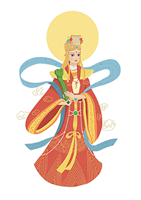

<!doctype html>
<html lang="en">
  <head>
    <meta charset="utf-8">
    <meta name="viewport" content="width=device-width, initial-scale=1">
    <title>Bootstrap demo</title>
    <link href="https://cdn.jsdelivr.net/npm/bootstrap@5.3.0/dist/css/bootstrap.min.css" rel="stylesheet" integrity="sha384-9ndCyUaIbzAi2FUVXJi0CjmCapSmO7SnpJef0486qhLnuZ2cdeRhO02iuK6FUUVM" crossorigin="anonymous">
    <script src="question.js"></script>
  </head>
  <body>
    <script src="https://cdn.jsdelivr.net/npm/bootstrap@5.3.0/dist/js/bootstrap.bundle.min.js" integrity="sha384-geWF76RCwLtnZ8qwWowPQNguL3RmwHVBC9FhGdlKrxdiJJigb/j/68SIy3Te4Bkz" crossorigin="anonymous"></script>
    <link rel="stylesheet" href="question.css">
  </body>
</html>

<nav class="navbar fixed-top navbar-expand-lg navbar-dark" id="bar">
<div class="container-fluid">
  <a class="navbar-brand" href="首页.html">
    
  福见妈祖
  </a>
  <button class="navbar-toggler" type="button" data-bs-toggle="collapse" data-bs-target="#navbarNav" aria-controls="navbarNav" aria-expanded="false" aria-label="Toggle navigation">
    <span class="navbar-toggler-icon"></span>
  </button>
  <div class="collapse navbar-collapse nav justify-content-end" id="navbarNav">
    <ul class="navbar-nav">
      <li class="nav-item">
        <a class="nav-link" aria-current="page" href="首页.html">首页</a>
      </li>
      <li class="nav-item">
        <a class="nav-link  " aria-current="page" href="index.html">妈祖文化</a>
      </li>
      <li class="active">
        <a class="nav-link " aria-current="page" href="question.html">知识问答</a>
      </li>
      <li class="nav-item">
        <a class="nav-link" aria-current="page" href="fujianmazu.html">妈祖庙</a>
      </li>
      <li class="nav-item">
        <a class="nav-link" aria-current="page" href="旅游攻略.html">旅游攻略</a>
      </li>
    </ul>
  </div>
</div>
</nav>

<div class="wenzi" style="margin-top:100px">
  <h2 style="padding:20px;text-align:center"> · 妈祖文化知识问答 · </h2>
</div>

<div class="card">
  <div class="card-body">
    <h5 class="card-title"> 下面10道题均为单选题，每题10分，快来看看你对妈祖知识的了解程度吧！</h5>
<div class="question">
  <li class="list-group-item">
    <p id="1"> Question 1: 我国沿海及东南亚地区普遍信奉的海神妈祖是源自哪个朝代？</p>
    <label><input type="radio" name="answer1" value="10"/> 宋代</label>
    <br>
    <label ><input type="radio" name="answer1"  value="0"/> 明代</label></li>
</div>

<div class="question">
  <li class="list-group-item">
    <p id="2"> Question 2: 沿海地区信仰的妈祖的本名是？</p>
  <label><input type="radio" name="answer2" value="0"/> 林墨娘</label>
  <br>
  <label ><input type="radio" name="answer2"  value="10"/> 林默娘</label>
</li>
</div>

<div class="question">
  <li class="list-group-item">
    <p id="3"> Question 3: 妈祖秋祭是在哪天举行？</p>
  <label><input type="radio" name="answer3" value="0"/> 农历八月初九</label>
  <br>
  <label ><input type="radio" name="answer3"  value="10"/> 农历九月初九</label>
</li>
</div>

<div class="question">
  <li class="list-group-item">
    <p id="4"> Question 4: 迄今所知道的有确切年代记载的最早的妈祖分庙是？</p>
  <label><input type="radio" name="answer4" value="10"/> 平海天后宫</label>
  <br>
  <label ><input type="radio" name="answer4"  value="0"/> 泉州天后宫</label></li>
</div>

<div class="question">
  <li class="list-group-item">
    <p id="5"> Question 5:天津天后宫是中国四大妈祖庙之一，始建于？</p>
    <label><input type="radio" name="answer5" value="10"/> 元代</label>
    <br>
    <label ><input type="radio" name="answer5"  value="0"/> 清代</label></li>
</div>

<div class="question">
    <li class="list-group-item">
      <p id="6"> Question 6:传说妈祖的故乡在我国的哪个城市？</p>
    <label><input type="radio" name="answer6" value="0"/> 浙江舟山</label>
    <br>
    <label ><input type="radio" name="answer6"  value="10"/> 福建莆田</label></li>
</div>

<div class="question">
    <li class="list-group-item">
      <p id="7"> Question 7:妈祖信俗什么时候被列入联合国教科文组织？</p>
      <label><input type="radio" name="answer7" value="10"/> 2009</label>
      <br>
      <label ><input type="radio" name="answer7"  value="0"/> 2011</label></li>
</div>

<div class="question">
      <li class="list-group-item">
        <p id="8"> Question 8:妈祖信俗发展史上最鼎盛的时期是什么时候？</p>
        <label><input type="radio" name="answer8" value="0"/> 明代</label>
        <br>
        <label ><input type="radio" name="answer8"  value="10"/> 清代</label></li>
</div>

<div class="question">
        <li class="list-group-item">
          <p id="9"> Question 9:“妈祖文化”的概念在哪年被提出？</p>
          <label><input type="radio" name="answer9" value="10"/> 1987</label>
          <br>
          <label ><input type="radio" name="answer9"  value="0"/> 1981</label></li>
</div>

<div class="question">
          <li class="list-group-item">
          <p id="10"> Question 10:现存最早的一部章回体妈祖神话小说是？</p>
          <label><input type="radio" name="answer10" value="10"/> 《天妃娘妈传》</label>
          <br>
          <label ><input type="radio" name="answer10"  value="0"/> 《天妃显圣录》</label></li>
</div>
<div class="bt">
  <div class="btt">
<button onclick="coreCount()">查看分数</button>
<button onclick="rightanswer()">正确答案</button>
</div>
</div>
</div>
</div>
<br>
